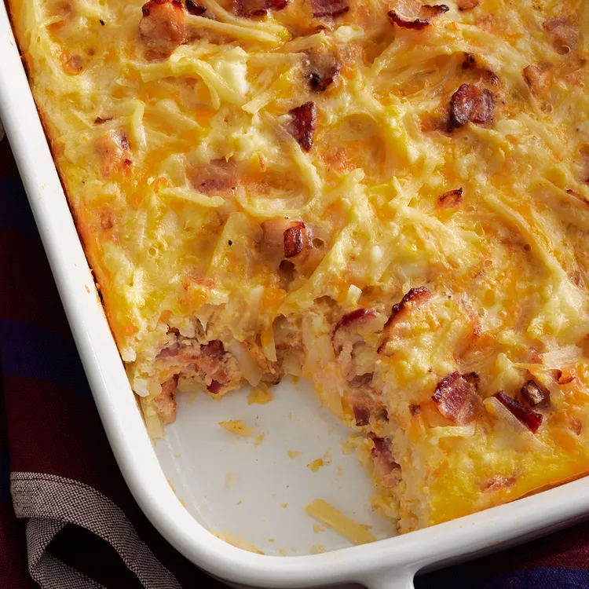

Cheesy amish breakfast casserole

Description
This Amish breakfast casserole has bacon, onion, eggs, hash browns, and lots of cheese. My family loves this
hearty dish! Try breakfast sausage in place of bacon if you prefer. This crowd-pleasing Amish breakfast
casserole recipe is not only hearty and filling, it’s made with budget-friendly ingredients you may already have
on hand.
Ingredients
- Bacon and onion: This Amish breakfast casserole starts with an onion sauteed with bacon.
- Eggs: You’ll need nine (lightly beaten) eggs.
- Hash browns: Frozen hash brown potatoes are the convenient secret ingredients.
- Cheese: This recipe calls for Cheddar, Swiss, and small curd cottage cheeses.
Steps
- Cook the bacon and onion, drain, and transfer to a bowl.
- Stir in the eggs, potatoes, and cheeses.
- Pour into a prepared baking dish and bake until the eggs are set.
Cheesy amish breakfast
casserole